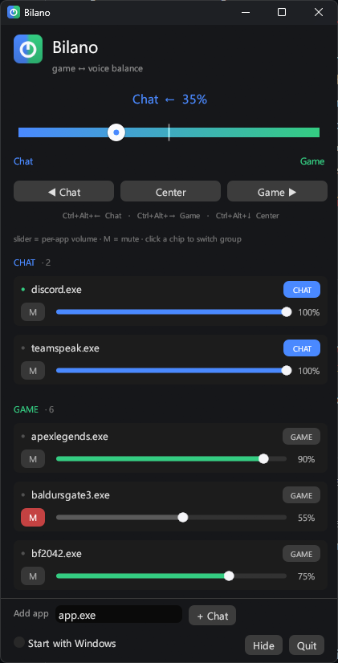

One dial. Your game on one side, your friends on the other.
Drag toward Game and voice chat fades down. Drag toward Chat and the game does. No virtual audio driver, no installer — a single 3 MB program that sits in your tray.
Drag the dial, a slider, or tap a chip

What it does
It turns other apps down, so you don't have to.
Windows already gives every app its own volume — the sliders you'd find in the Volume Mixer. Bilano just moves them for you. Tag Discord and anything else you talk on as Chat; everything else counts as Game. One dial then fades whichever side you're turning away from.
The fade is measured in decibels rather than percent, so the second half of the dial doesn't fall off a cliff — moving it feels the same at either end. Each app also gets its own volume slider and a mute button, and every one of them is put back to full when you quit.
Because it's only moving volumes, there's no virtual sound card to install and nothing left running when it's closed. That's the whole trade: it can't route audio to separate devices the way a driver can, but for balancing a game against a voice call it sounds the same.
Install
Three steps, one of them annoying.
- Download the zip from the releases page and unzip it wherever you like.
- Run
bilano.exe. The window opens and a dial icon appears in your tray, near the clock. - Tag your voice apps as Chat. Discord is tagged already. Everything else stays Game.
Windows will warn you the first time. Bilano isn't code-signed — a certificate costs more per year than this project will ever make — so SmartScreen says "Windows protected your PC". Choose More info → Run anyway. Some antivirus software flags unsigned programs too; if yours quarantines it, allow the folder.
Hotkeys
Adjust it without leaving the game.
These work anywhere, including full screen.
| Keys | Does |
|---|---|
| Ctrl Alt ← | Move toward Chat |
| Ctrl Alt → | Move toward Game |
| Ctrl Alt ↓ | Back to the middle |